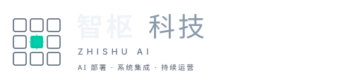

AI 执行层——让每个决策都有人跟、每个任务都有人盯。
90 天部署，持续进化。数据不出厂。
老板的问题不是员工不努力——是看不见、管不到、信息到手上已经晚了。
你有 ERP 管数据、OA 管审批——但谁在管「事情有没有真正落地」？
不是替代人，是给整个企业装一套能感知、能判断、能行动的智能系统。
4 个角色，接入你现有的系统，不需要换软件。零替换原则——AI 搭档像「新同事」一样融入。
把重复的交给系统，把判断的留给人。不是替代团队——是让每个人都能做更有价值的事。
从「救火」变成「下棋」。
你买的不是一个项目，是一个持续进化的执行系统。
不是 SaaS，不是外包，不是自建——是一种新的合作方式。
"能让客户续费的公司，比能让投资人打款的公司更值得信任。每一分收入都来自客户认可的交付价值。"
零风险，零义务。3 天业务体检，给你一份带数字的诊断报告。